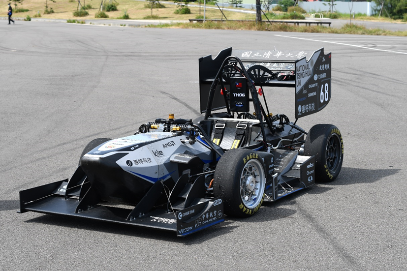

四輪驅動自駕賽車之同步定位與地圖建置、導航控制及扭力引導系統研究
Hi! - by 子靖學長
本研究基於學生方程式無人賽車競賽，使用縮小比例實驗載具在角錐定義的賽道中實現環境感知、即時定位與地圖建構、路線建立、隨機模型預測最佳化控制。整台自駕車的運算架構可大致分為感測器融合與導航控制兩部分。感測器融合利用擴展式卡爾曼濾波器與FastSLAM-1.0演算法，融合相機與各項感測器資訊，以估測出車輛位置和角錐地圖等資訊。導航控制則是基於定位和路徑資料，應用圖形處理器平行運算多個車輛動力學模型，以模型預測控制-隨機最佳化方式求解車輛之控制，並引入扭力引導系統(Torque Vectoring)以輔助車輛達成更高的偏航角速度，以減緩轉向不足，使車輛過彎更加靈活。
Based on Formula Student Driverless (FSD) competition, this research uses a scale-down prototype vehicle to achieve environment perception, simultaneous localization and mapping (SLAM), road building, and stochastic model predictive control (MPC) in the track defined by the cones. The computing structure of the autonomous vehicle can be divided into two parts: sensor fusion and navigation control. Sensor fusion applies extended Kalman filter (EKF) and FastSLAM-1.0 algorithms to estimate vehicle position and coned map using measurements from two cameras and various sensors. Navigation control is based on localization results and map information, and it relies on the graphics processing unit (GPU) to calculate multiple vehicle trajectories in parallel for solving the vehicle control problem by stochastic MPC. The navigation control also introduces torque vectoring to further enhance the vehicle performance. The understeer phenomenon is alleviated and a higher yaw rate is achieved, which makes the vehicle more agile in cornering.
Down-scale(1:3)self-made autonomous vehicle
Formula Student eletric vehicle(NTHU Racing TH06)